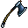

#12 · weapon_12MegabonkAxeНаша иконкаTwin CleaverДвойной секачЭффект оригинала в MegabonkБросает вращающиеся топоры, некоторое время поражающие врагов.ИсточникНаш PNG · 12Связь по ID · JSONОсновной — актуальный · weapons-current64 px32 px
 32 px
32 px